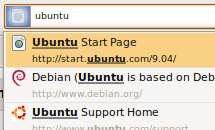
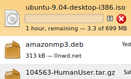
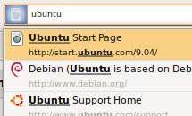
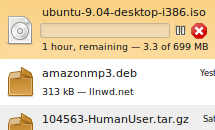

Ubuntu comes with Firefox 3, the latest web browser from Mozilla. Firefox has quickly become one of the most popular web browsers and is used on millions of computers worldwide. With this version of Firefox, browsing is a smooth, safe and fun experience.
Experience a consistent appearance across platforms. With Firefox 3 being the most standards compliant Firefox so far, web pages can be rich, beautiful and intelligent.
 


